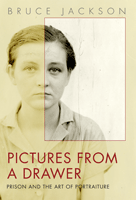

<body bgcolor="#FFFFFF" text="#000000" link="#0000FF" vlink="#CC0000" alink="#CC0000"><center><hr width="350" size="1" align="center" noshade>A remarkable collection of prison "portraiture" photos<hr width="350" size="1" align="center" noshade><p><a href="https://cdcshoppingcart.uchicago.edu/Cart/ChicagoBook.aspx?ISBN=9781592139484&&PRESS=temple" target="_top">Buy this book!</a> | <a href="https://cdcshoppingcart.uchicago.edu/Cart/Cart.aspx?PRESS=temple" target="_top">View Cart</a> | <a href="https://cdcshoppingcart.uchicago.edu/Cart/Cart.aspx?PRESS=temple" target="_top">Check Out</a></p><p></p></center><!--none//--><h1>Pictures from a Drawer</h1>
<H2>Prison and the Art of Portraiture</H2>
<h3>Bruce Jackson</h3>
<P>cloth 1-59213-948-5 $90.50, Apr 09, <FONT COLOR=#990033>Available</FONT>
<br>paper 1-59213-949-3 $38.95, Feb 09, <FONT COLOR=#990033>Available</FONT>
<BR> 192 pp
7x10
151&nbsp;duotones
</P><BLOCKQUOTE><I><p><i>"I'm intrigued by the portraits of these prisoners. These
pictures all speak to me of another time not only because
of the way the people are dressed, but also because of
the direct simplicity and innocence of the images. Today,
when so many photographs are altered and manipulated,
the honesty and reality of these images make them stand
out as powerful and true portraiture for all time."</i><BR>&#151<b>Mary Ellen Mark</b>
</p></I></BLOCKQUOTE>
<p>For more than forty years, Bruce Jackson has been documenting&#151in books, photographs,
audio recording and film&#151inmates' lives in American prisons. In November 1975, he
acquired a collection of old ID photos while he was visiting the Cummins Unit, a state prison
farm in Arkansas. They are published together for the first time in this remarkable book.
The 121 images that appear here were likely taken between 1915-1940. As Jackson
describes in an absorbing introduction, the function of these photos was not portraiture—
their function was to "fold a person into the controlled space of a dossier."
Here, freed from their prison "jackets" and printed at sizes far larger than
their originals, these one-time ID photos have now become portraits.
Jackson's restoration transforms what were small bureaucratic artifacts
into moving images of real men and women.
<i>Pictures from a Drawer</i> also contains an extraordinary description of
everyday life at Cummins prison in the 1950s, written originally by hand
and presented to Jackson in 1973 by its author, a longtime inmate.</p>
<BR>&nbsp;<h2>Excerpt</h2><P>Excerpt available at <a href="http://www.temple.edu/tempress">www.temple.edu/tempress</a></p>
<BR>&nbsp;<h2>Reviews</h2>
<p><i>"In a stimulating introductory essay accompanying this collection of extraordinary photographic portraits, Jackson (</i>The Story Is True<i>) recalls visiting in 1975 Arkansas's Cummins state prison farm, where an inmate invited him to fill his pockets with about 200 discarded prisoner identification photographs, likely dating from 1915 to 1940.... Shrewdly, Jackson balances their remarkable refurbishment with a strong sense of provenance (retaining staple holes and creases, for example), while eschewing any attempt to connect each haunting image with a particular crime or narrative. Given unprecedented and (from the perspective of their original purpose) utterly unintended scope, the human dimensions of these images grant each an irreversible dignity for the first time, while simultaneously taking on the essential characteristic Jackson names: they become 'mirrors' of ourselves."</i>
<br>&#151;<b><i>Publishers Weekly</i></b>
<p><i>"</i>Pictures from a Drawer<i> is one of the most complex and compelling tales of the origin of documentary imagery I've ever read. Jackson writes clearly and insightfully in ways that help us understand the images before us while still leaving the pictures ample room to extend their own meanings to us. His attempt to explain their origin, function, and language is original and nuanced. Jackson presents no easy answers about prison life, and in so doing is suggesting something very real and important about any rendering of another person in an image. In the end, though, after providing wonderful context, Jackson gives us the photographs and leaves us—and them—to derive the latent meanings. Jackson has crafted a book about just what it means to make and see a portrait."</i>
<br>&#151;<b>Tom Rankin</b>, Director, Center for Documentary Studies at Duke University
<p><i>"The sitters in these jarring portraits of prisoners stare out past us seeking neither pity nor absolution. Bruce Jackson had a special vision when he lifted them from their moldering cell. Far from being anachronisms, these pictures have the capacity to tell us something important about the America we live in today, a country where similar folks sit in our jails and prisons in greater numbers than any time in human history."</i>
<br>&#151;<b>Billy Sothern</b>, anti-death penalty lawyer and author of <i>Down in New Orleans: Reflections from a Drowned City</i>
<p><i>"The absorbing opening chapters discuss everything from the nature and history of portraiture, to his trips to the prison, to the technical details of how he restored the photos without compromising what had happened to the prints over time. The faces in the photos, these pictures from a drawer, are haunting."</i><br>&#151;<b><i>Foreword</i></b>
<p><i>"Photographs made at the Arkansas penitentiary in the early part of the 20th century and lifted by Bruce Jackson, a professor at SUNY at Buffalo, from a drawer there are the best reason to buy '</i>Pictures from a Drawer: Prison and the Art of Portraiture<i>'.... The pictures do have unusual power."</i><br>&#151;<b><i>Arkansas Times</i></b>
<p><i>"This book does not chronicle the lives, deeds, and misdeeds of the people shown in the 'portraits.' The people in the photos are numbered, remaining unnamed, and perhaps, rightly so. It is largely a pictorial book, with an essay on how the pictures were created and how they have come to be compiled. The essential thing, as we look in to [the] eyes of each subject, in the facial personification of their incarceration, is the utter honesty of portrayal." </i><br>&#151;<b><i>Sacramento Book Review</i></b>
<p><i>"This book is a sometimes interesting...endlessly speculative set of ruminations about a random group of photographs from an Arkansas prison....[T]he photographic portraits, some entrancing and others menacing, could kindle a novel as easily as a bad dream." </i><br>&#151;<b><i>Photographer's Forum</i></b>
<p><i>"[A] remarkable study of a collection of photographs of male and female prisoners serving time at the Cummins prison in Arkansas....This collection is of great value to material culture scholars who rely heavily on the use of photography to document items under study, to record particular ethnographic moments or to analyze and interpret the meaning of physical artifacts being studied."</i><br>&#151;<b><i>Material Culture Review</i></b>
<p><i>"[T]his outstanding book makes the most of the 178 photographs that [Jackson] stuffed into his pockets thirty-four years ago. Pictures from a Drawer is part philosophical discourse on the meaning of photography, part technical treatise on the restoration and digitization of photographic prints, and part exposé of the horrors of prison life (in the form of a memoir handwritten by a longtime inmate and presented to Jackson in 1973). However, what most strongly draws the reader into the book are the full-page portraits of prisoners, which Jackson has sensitively restored and contextualized. Indeed, Jackson has no peer when it comes to documenting and analyzing the folklife of prisons."</i> <br>&#151;<b><i>Western Folklore</i></b>
<BR>&nbsp;<P>Click <a href="http://templepress.wordpress.com/2009/02/12/bruce-jackson-pictures-from-a-drawer/">here</a> to read this author's blog entry on North Philly Notes.</P><BR>&nbsp;<br>
<h2>Contents</h2><P>
<p>1. Pictures from a Drawer
<br>2. Restoring the Eyes
<br>3. Size
<br>4. Dating the Images
<br>5. The Women
<br>6. Portraits
<br>7. Seeing People
<br>8. The Order of Things
<br>9. Mirrors
<br>The Portraits
<br>Appendix: Cooter’s Yellow Pad
<br>Acknowledgments
</P><BR>&nbsp;<H2>About the Author(s)</H2>
<table><tr><td valign="top"><img src="/tempress/authors/2007_au1.gif" height="90" width="75"></td><td width="100%" valign="middle"><p><b>Bruce Jackson</b> is SUNY Distinguished Professor and
Samuel P. Capen Professor of American Culture, University
at Buffalo. He is the author of more than 20 other books,
including <i>The Story Is True: The Art and Meaning of Telling
Stories</i> (Temple), a documentary filmmaker and photographer.
The French government named him Chevalier in L’Ordre des Arts et des Lettres, France’s highest honor in the arts and humanities.</P></td></tr></table>
<BR><H2>Subject Categories</H2>
<p><A HREF="/tempress/art.html" TARGET="_top">Art and Photography</a>
<BR><A HREF="/tempress/american.html" TARGET="_top">American Studies</a>
<BR><A HREF="/tempress/law.html" TARGET="_top">Law and Criminology</a>
</p>
<p align="center"><a href="https://cdcshoppingcart.uchicago.edu/Cart/ChicagoBook.aspx?ISBN=9781592139484&&PRESS=temple" target="_top">Buy this book!</a> | <a href="https://cdcshoppingcart.uchicago.edu/Cart/Cart.aspx?PRESS=temple" target="_top">View Cart</a> | <a href="https://cdcshoppingcart.uchicago.edu/Cart/Cart.aspx?PRESS=temple" target="_top">Check Out</a></p><p><font face="Arial" size="1"><a href="copyright.html" onMouseOver="window.status='Web Copyright Policy';return true;" onMouseOut="window.status=''" title="Web Copyright Policy">&copy;</a> 2015 <a href="http://www.temple.edu" target="new" onMouseOver="window.status='Link to Temple University home page';return true;" onMouseOut="window.status=''" title="Link to Temple University home page">Temple University</a>. All Rights Reserved. http://www.temple.edu/tempress/titles/2007_reg.html</font></p>